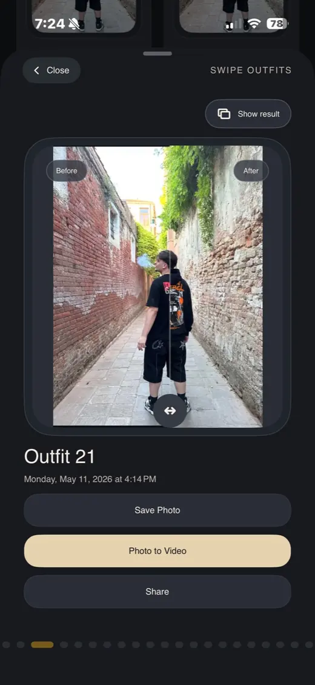

Testezi articole vestimentare
Poți porni de la haine salvate, poze de produs sau idei de outfit pe care vrei să le vezi pe corpul tău.
Cabină virtuală pentru shopping online
TryClothes te ajută să vezi rapid cum îți vin hainele pe corp, fără să ghicești mărimea, croiala sau vibe-ul unei ținute. Încarci o poză, alegi articolul vestimentar și primești un preview realist pentru decizii mai bune.

De ce contează
Când cumperi haine online, poza produsului nu îți arată mereu cum se așază materialul pe tine. TryClothes transformă procesul într-o probă virtuală mai clară, astfel încât să compari ținute, culori și croieli înainte să comanzi.
Poți porni de la haine salvate, poze de produs sau idei de outfit pe care vrei să le vezi pe corpul tău.
Preview-ul este gândit pentru formă, poziție, lumină și context, nu doar pentru o suprapunere rapidă peste poză.
Compari variantele și păstrezi doar hainele care au sens pentru garderoba ta reală.
Proces
Fluxul este construit pentru cumpărături rapide, dar cu un rezultat suficient de clar încât să nu pierzi timp cu retururi sau combinații care nu ți se potrivesc.
Întrebări frecvente
Da. TryClothes este construit pentru probă virtuală de haine, outfits și articole vestimentare înainte de cumpărare.
Scopul produsului este să te ajute să testezi haine din surse online, inclusiv screenshots și articole salvate.
Pentru că poți vedea mai bine dacă o haină se potrivește stilului, proporțiilor și garderobei tale înainte să plătești.
Explorează